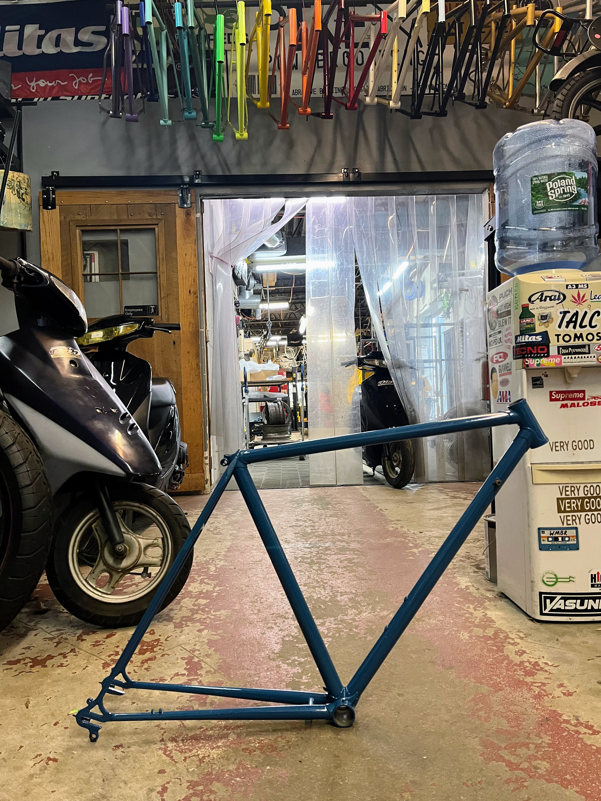

Hey all, we’re back. I flew to Switzerland for a friend’s wedding and with it came all my momentum. Out goes Gantt chart 1 and Gantt chart 2! I’m far behind my timeline and, as of press time, have a frame and fork put back together. The paint came out beautifully:

I originally tried to match the original color but the fine folks at Pike Powdercoating (s/o Zach!) showed off a sweet alternative. I’ll add pictures in a future post but imagine this for now: they apply 2 very similar coats of paint lightly; when the topcoat is thin enough, the bottom coat shines through and the effect is nearer to a starry night than any other image I can conjure.
After the paint dried, I pulled out components for degreasing, Evaporust-ing, and—where appropriate—polishing or lubricating. The jewel here is, again, the Campagnolo Rally derailleur. Here’s the before and after:
But, Evaporust can do a lot more than that. It’s proprietary, yet non-toxic and water-based formula transubstantiates neglected components into artful simple machines. Here’s the pedals:
Pedals: before and after
Somehow, I failed to take more pictures of the same components before and after; I went to the trouble of using chrome polish on the brakes and don’t have a picture to show for it! Anywho, here’s the front derailleur:
You don’t know what it looked like before but just imagine given the rear derailleru.
This all took 3 hours of active time and a few overnights of soaking in my apartment basement. Above ground, I faced another challenge. I learned from Reddit that the Phil Wood bearings were dry but also difficult to service, owing to the fact that my cartridge was a version 1 rather than the repairable version 2. I searched for a replacement but, basically my only cartridge option was another Phil Wood; the company offered to knock $50 off the price but I couldn’t stomach paying $150 when Shimano makes perfect units for $15. This led to a bout of decision paralysis as the weeks began to stack up.
Then, on April 14(?), an Instagram post from the Somerville Bike Kitchen announced their annual bike pageant would show off the community’s bikes (and bike projects) on May 3. They had a vintage category and I took that as my sign to get back to work. Plus, with the weather improving, I found myself restless to get back on smooth, dry roads.
I first followed up with a Redditor who took interest on my bike story and my Phil Wood problems. He offered to find a version 2 bottom bracket on eBay and service it himself. We exchanged details and learned that we lived just half an hour away! As a friend likes to say, >the world is not small, it’s highly stratified – Xander
For $80, I got a new old bottom bracket and a new contact in the Boston bike world, and an increasingly rare treasure: Frame Saver.
Name-brand Frame Saver appears to be off the market now (though there are replacements) but I wanted to make sure I used it to protect my frame for the long decades ahead. Applying this is a kinda weird process but went smoothly. I also went back to SBK to use their headset tools. When I walked in, volunteers effectively stoked my ego: >they just don’t make them like that any more – Paul
woah, that’s a fancy-as-shit crown race – Kevin
But beneath the compliments, I was nervous about repacking the headset. I’m not sure why, but I think it’s just the sheer potential to get all my clothes all greasy. I didn’t think about how to get the cups back on and that itself turned out to be perhaps the most fraught process. Staff recommended I face the headtube; wanting to do things The Right Way, I acceeded but we couldn’t find the tool to do so and I walked away with the missed opportunity gnawing at me. I ended up eyeballing the cup installation and started on the headset itself. I needn’t have worried because the whole process is pretty reversible and re-doable (and I will need to do it again because I didn’t add enough grease the first time).
As I type this, I have exactly 1 week to reassemble the bike. In order from most anxiety-inducing to least:
- bottom bracket, crank, and pedals
- wheels and chain
- brakes, cables, and housing
- front and rear derailleur
- handlebars
- seatpost
- water bottle cage
I’m also realizing that I’ll have some post-assembly work ahead of me. In addition to the headset, I expect: lots of work on the wheels: truing, spoke tightening, and hub servicing; rear derailleur disassembly and lubricating; handlebar re-wrapping.
Can I do it all? I think? If I can get it riding again, I’ll be more motivated to piece that work out and finish it. Either way, stay tuned to find out.